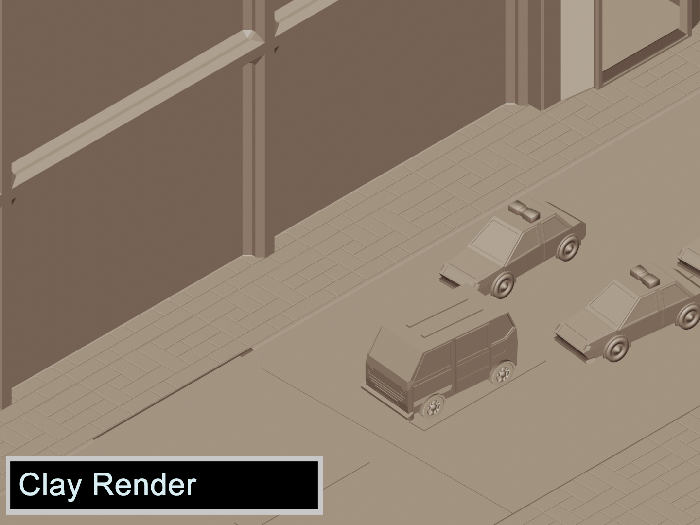
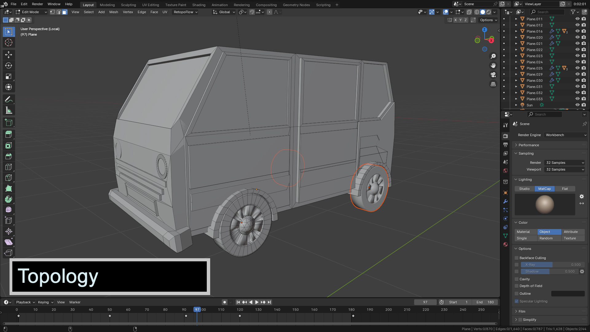
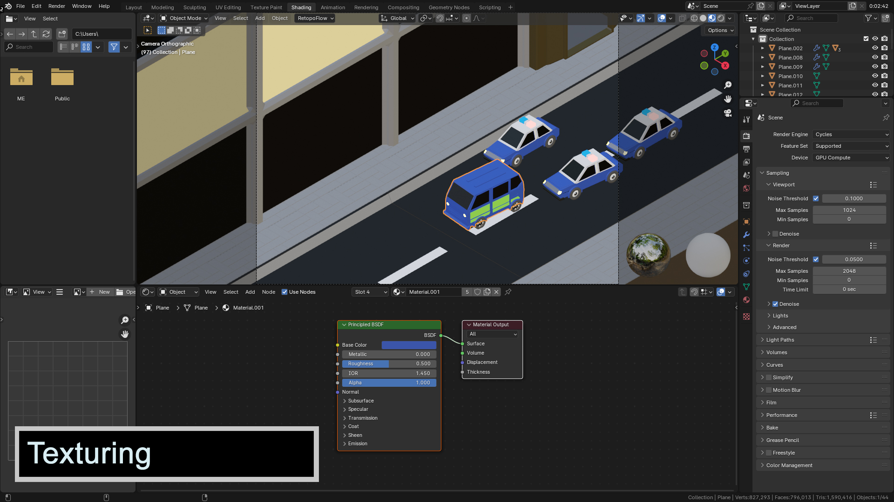
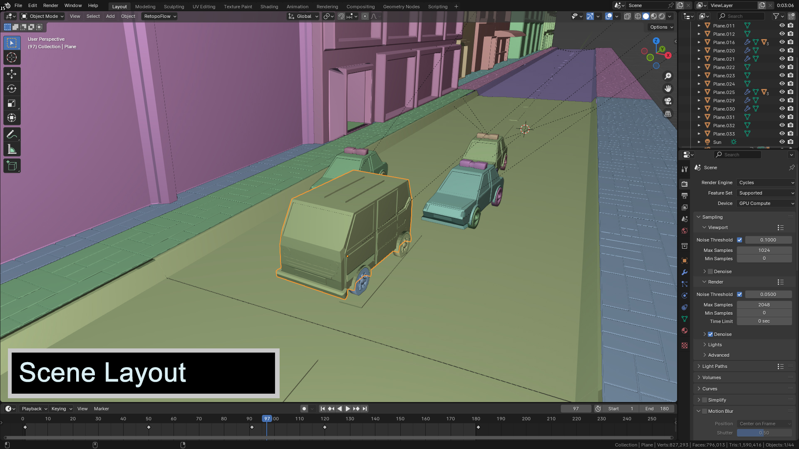
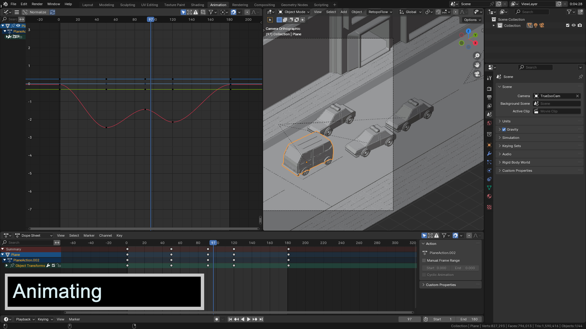
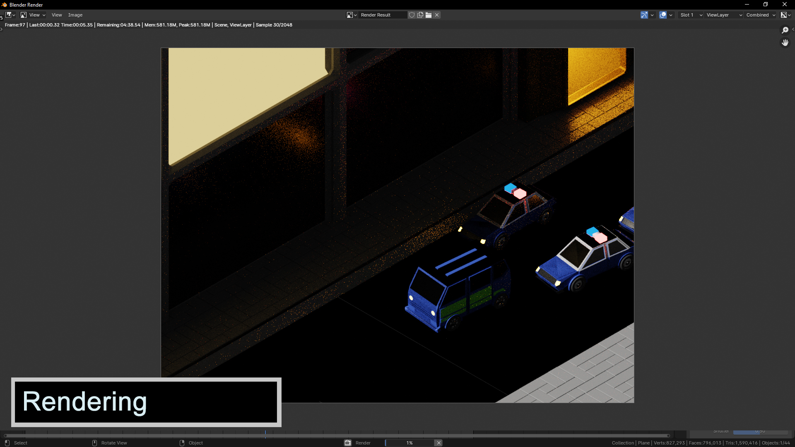

Chase Breakdown
Here is my take on stylization that I used to make this chase scene.
     As usual I modeled the cars and the building and textured them in blender. after which i set up the scene animated the cars and the camera then I added lighting to the scene. rendering is the next step then after I used blenders compositor to add some details and the animation is done.